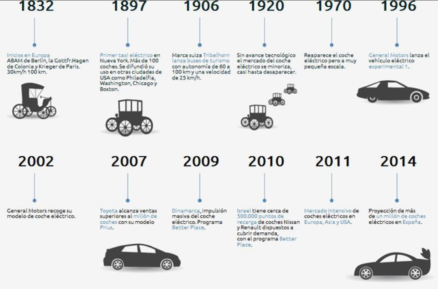

¨Resulta tan fascinante e instructivo para el especialista en historia de la técnica como para el lector lego en la materia" - Ernst Braun
George Basalla, nacido en 1928, es un historiador estadounidence de la ciencia y las tecnologías, además de profesor emérito de la Universidad de Delaware. Ha escrito 5 libros dentro del periodo de 1967 - 2006.
En el comienzo de este libro se explican conceptos como el uso de la metáfora; la errónea creencia de que los inventos son producidos por una necesidad, utilizando el ejemplo de la rueda; la versatilidad de las necesidades y las necesidades fundamentales. Luego hace una recopilación sobre diferentes conceptos y teorías, ya existentes, de la evolución tecnológica (Butler, Pitt-rivers, Ogburn, Gilifillan, Abott P. Usher) con el fin de plantear una nueva teoría.
3.1 "La necesidad desencadena el esfuerzo inventivo". En realidad hay muchos ejemplos que contradicen este planteamiento, la necesidad no desencadena a la invención. Hay muchas cosas que no son necesarias en nuestras vidas pero que aún así se ha creado un pensamiento colectivo de que si lo son. También hay muchos inventos con los que sin ellos estaríamos mejor. por esto, como diseñador, es importante siempre plantearse este tema de necesidad.
3.2 El ejemplo de la rueda puede que explique bien que las necesidades son algo relativo. Algo que depende del contexto, época, cultura y muchas otras categorías. Pero, ¿es un buen ejemplo para la actualidad? Personalmente creo que no. Esto debido a que hoy en día existe una globalización en la que muchas necesidades estan coordinadas gracias a los propios avances tecnológicos. Tal ves fue un buen ejemplo para la época pero en el contexto actual no.
3.3 "El mundo artificial mostraría menor diversidad si operase prioritariamente bajo las construcciones impuestas por las necesidades fundamentales". Refiriéndose a necesidades fundamentales como con aquellas que son imprescindibles para sobrevivir, muestro mi confusión ante este punto de vista utilizando el mismo ejemplo que se da en el libro, los automóviles. Según el libro estos fueron creados a base de necesidades que no eran fundamentales durante la época, eran vistos como un lujo, pero con el tiempo este invento dió paso a una nueva necesidad (transporte). Al analizarlo, esta necesidad realmente si existía antes de los vehículos motorizados (habían caballos, camellos, burros, etc) e incluso antes de los transportes "animales" (necesidad de caminar, moverse a pie). Entonces ¿realmente es un invento que no surge a base de una necesidad fundamental, a pesar de que haya sido visto como un capricho de primera?. Si no se hubiese inventado todavía, ¿cuánto creen que se demoraría en inventarse?. Ahí mi confusión ante si realmente guiáramos el mundo artificial por las necesidades fundamentales, habría menos variedad de inventos. Creo que talves sería lo mismo, es un factor que no afecta a las tecnologías.
 Referencias